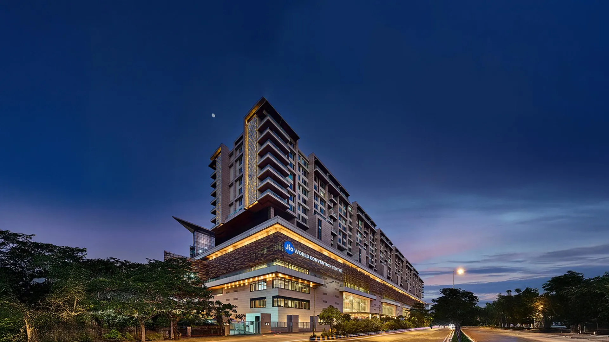

Devcon 8 · Mumbai
The people who make Devcon run.
Roles, shifts and training for the Devcon 8 volunteer crew at Jio World Centre, Mumbai. A community guide, written by volunteers.
Devcon 7 SEA volunteer crew, Bangkok.
- 6days in Mumbai, 1 to 6 November
- 2half-day shifts: 7am to 2pm and 12pm to 7pm
- 6role guides, one page each
- 4mandatory training sessions, one in person

Photo: WordCamp Asia 2026 venue page
The venue
Jio World Centre, Bandra Kurla Complex.
G Block, BKC, Mumbai. Eight large halls in three groups, a ballroom that divides into three, and 25 meeting rooms across four floors.
Reference only. Maps and floor plans from Jio World Centre show the building. The official Devcon map, with every Devcon activity added, will replace them when it is released.
Role guides
Six roles. One page each.
Every guide starts from what the Devcon 7 crew used in Bangkok. You may be moved between roles, so read the ones near your own. Anything that depends on the Mumbai venue is marked Mumbai TBC until the Devcon team confirms it.
Registration
The first face attendees see. Scan tickets, fit wristbands, hand out the welcome pack, and keep the line moving.
Open the guide → 02General Floor
Doors, directions and crowd flow. Check wristbands, keep the venue friendly and sponsor neutral.
Open the guide → 03Swag Station
Scan the claim, check the size, hand it over. Free and paid swag pick-up.
Open the guide → 04Stage and Speaker
Keep every session on time and every speaker on the right stage.
Open the guide → 05Info Desk
The front line for every question an attendee can think of.
Open the guide → 06Meeting and Discussion Rooms
Meeting room and discussion room bookings, and who gets through the door. Includes all 25 meeting rooms at the venue.
Open the guide →The deal
What we ask, and what you get.
Being a volunteer is a two-way promise. Here is both sides, straight from the volunteer programme.
What we ask
- Be in Mumbai from 1 to 6 November 2026.
- Cover your own travel and accommodation.
- Check India's visa requirements and apply for a visa if you need one.
- Work at least one shift every day, from 2 to 6 November.
- Join the mandatory online training before the event.
- Join the mandatory in-person training on 1 November.
- Be willing to help with every part of the event: Registration, General Floor, Swag, Info Desk, Discussion Rooms, Stage and more.
What you get
- A free ticket to Devcon 8 India, 3 to 6 November 2026.
- A place in a global community of volunteers.
- An invitation to the Volunteer Welcome reception.
- Special edition volunteer swag.
- Hands-on learning about Ethereum, team building, event production and more.
- Special surprises for everyone who makes it to the end.
- Memories for a lifetime.
Shifts
Half-day shifts.
Every volunteer works at least one shift a day from 2 to 6 November, about half of the event's full hours. Times below are the working plan and may still move.
Morning
7am to 2pm
Lunch is provided at the venue, with a lighter bite for breakfast.
Afternoon
12pm to 7pm
Overlaps the morning shift from 12pm to 2pm. Lunch is provided, with a lighter bite for dinner.
Half days, not full days
At Devcon 7 in Bangkok volunteers worked full days. In Mumbai everyone works a half-day shift.
Food and drink
Everyone gets lunch at the venue. Snacks, drinks, tea and coffee are available all day.
Rotation and breaks
Your lead organises shift rotation and breaks.
Training
Three calls and a day on site.
All training sessions are mandatory. Recordings are available if you cannot attend live. The in-person training is a requirement: if you cannot attend it, you cannot volunteer that week.
-
Roadmap call
Done
The first volunteer training session.
-
Fri 9 Oct
Online, 3 to 4pm UTC
Welcome and event info.
8:30 to 9:30pm IST
-
Fri 16 Oct
Online, 3 to 4pm UTC
Map, roles and shift assignment.
8:30 to 9:30pm IST
-
Fri 23 Oct
Online, 3 to 4pm UTC
Security and emergency training.
8:30 to 9:30pm IST
-
Sun 1 Nov
In person, 1 to 6pm IST
Venue tour, plus role-specific and security training at Jio World Centre. Required.
-
Sun 1 Nov
7 to 9pm IST
Volunteer Welcome reception. You are invited.
Lock-in checkpoints
Two checkpoints confirm you are in: 6 October, before training starts, and 26 October, one week before the event.
Cannot lock in?
Life happens. Message Ornella on Telegram (@OrnellaWeb3) as soon as you know, so the team can reorganise and offer your place to someone else.
Missed a live call?
Watch the recording. Every session is recorded for people who cannot join live.
Getting there
Plan your Mumbai trip.
Devcon publishes an official travel guide. This is the short version, pulled from it.
Arriving
- Fly into Chhatrapati Shivaji Maharaj International Airport (BOM), about 10 to 12 km from BKC.
- Look for the Devcon Welcome Booth at Terminal 2 arrivals.
- Metro Line 3 reaches BKC from the airport in about 5 minutes.
- Use the app-cab pickup zone or the official prepaid taxi counters, and ignore unsolicited offers.
Where to stay
- Pick by commute to Jio World Centre, not just neighbourhood. A 3 km trip can take 10 minutes at dawn or 45 later.
- Devcon overlaps Diwali, so rooms go fast. Book early.
- Unsure about a place? Ask in the Devcon Telegram group.
Visas and costs
- Most foreign nationals need a visa for India. Checking the requirements and applying is part of the volunteer commitment, so apply early.
- Devcon does not issue visa support letters to general attendees. A Ticket Confirmation Letter is available.
- Travel, visas and accommodation are your responsibility under the Devcon terms.
Resources
Everything else worth bookmarking.
Community guides are unofficial and written by other volunteers and attendees.
- Mumbai travel guideUnofficial, by Nitasha on X
- Event planning around DevconExplains the different venues, by Nitasha on X
- Side events listGoogle Sheet
- A volunteer's Devcon 7 rundownBlog post by a Devcon 7 volunteer
- Devcon ArchiveTalks from every previous Devcon
- Devcon ForumOfficial community forum
Getting to Devcon with less stress: unofficial ideas
Non-affiliation notice. Everything in this box is an independent idea, shared for information only. Devcon, the Ethereum Foundation and the official event team are not affiliated with, sponsoring or involved in it. The organisers do not provide travel grants, endorse third-party funding requests or manage private sponsorship. Any outreach must happen online and off-site, never inside the venue.
Rules to respect first
- Soliciting, fundraising and "suitcasing" are prohibited at Devcon. See the terms of service.
- Only pre-approved teams can distribute swag or branding. See the code of conduct.
- Travel, visas, transit and lodging are the attendee's responsibility, in the same terms.
Off-site funding ideas
- List your group on public-goods platforms such as Giveth or an active Gitcoin round, or submit a travel proposal to an ecosystem public-goods fund.
- Complete pre-event digital tasks such as translation, documentation, design or video editing through bounty platforms like Superteam Earn or Bountycaster.
- Approach Web3 companies for travel stipends, offering digital value in return such as recognition on X or Farcaster, or a post-event write-up.
Staying cheaper
- Ask in unofficial housing chats on Telegram, Discord or Farcaster whether teams renting large places have spare space.
- Contact local Web3 groups and developer hubs in Mumbai.
- Set up verified profiles on hosting networks such as Couchsurfing, Trustroots or BeWelcome.
- Ask university student groups and community centres about low-cost stays.
FAQ
Quick answers.
Where the answer depends on the Mumbai venue and is not confirmed yet, it says so.
Where do I check in for a shift?
Check in and out with the Volunteer Attendance Lead at the start and end of every shift. The volunteer room will be announced to volunteers when it is available.
When do I need to be in Mumbai?
From 1 to 6 November 2026. The in-person training and the Volunteer Welcome reception are on Sunday 1 November, and shifts run from 2 to 6 November.
Are the training sessions really mandatory?
Yes. Recordings are available if you cannot attend a call live. The in-person training on 1 November is a requirement, and without it you cannot volunteer that week.
Who do I contact with questions?
Volunteer communication runs through Telegram. Message Ornella on Telegram (@OrnellaWeb3). She is with the Ethereum Foundation, building Devcon 8 India, and is also on @ornellaweb3 on X. For general Devcon questions such as tickets and visas, the official support email is support@devcon.org.
Who arranges shift rotation and breaks?
Your lead. They organise the rotation between posts and when you take breaks.
What if I cannot lock in?
Message Ornella on Telegram (@OrnellaWeb3) as soon as possible, so the Devcon team can reorganise and offer the place to someone else. The two lock-in checkpoints are 6 October and 26 October.
What do volunteers get?
A free ticket to Devcon 8 India, an invitation to the Volunteer Welcome reception, special edition volunteer swag, and a few surprises for those who make it to the end. See the full list.
What food is provided?
Lunch at the venue for everyone, plus a lighter bite for breakfast or dinner depending on your shift. Snacks, drinks, tea and coffee are available all day.
What are the shift times?
The working plan is 7am to 2pm and 12pm to 7pm, and everyone works at least one shift a day. Times may still change, and this page will be updated first.
Who pays for travel and accommodation?
You do. The Devcon terms make travel, visas, transport and lodging the responsibility of each participant, volunteers included.
Can I hand out swag or promote my project?
No. Only pre-approved teams can distribute swag, and solicitation, fundraising and suitcasing are prohibited. See the code of conduct and terms of service.
How do I report a problem?
Follow the reporting steps in the code of conduct: tell the registration desk or info booth, or email support@devcon.org. Tell your lead as well.
Do I need a visa for India?
Most foreign nationals do, and checking and applying is your responsibility as a volunteer. Devcon does not issue visa support letters for general attendees, and a Ticket Confirmation Letter is available. Read the official FAQ and apply early.
Where will the official map be?
The Devcon map, with all activities added to the venue plan, has not been released. Until then, use the Jio World Centre material on this page as a reference only.